Daily MCQs Test – Chapter 1
Solve Chapter 1 MCQs online and get your result instantly.
Learn chapter-wise lecture notes, solved MCQs, important questions, daily tests, latest textbook, and exam preparation material designed for Punjab Board students.
Quickly search chapter notes, lectures, MCQs, daily tests, important questions, past papers, and study resources.
Download the latest 10th Class Computer Science textbook and Smart Syllabus for Punjab Board.

Download the latest 10th Class Computer Science Smart Syllabus 2027 for Punjab Board. Get the updated syllabus and important topics to prepare effectively for your examinations.
Download Smart Syllabus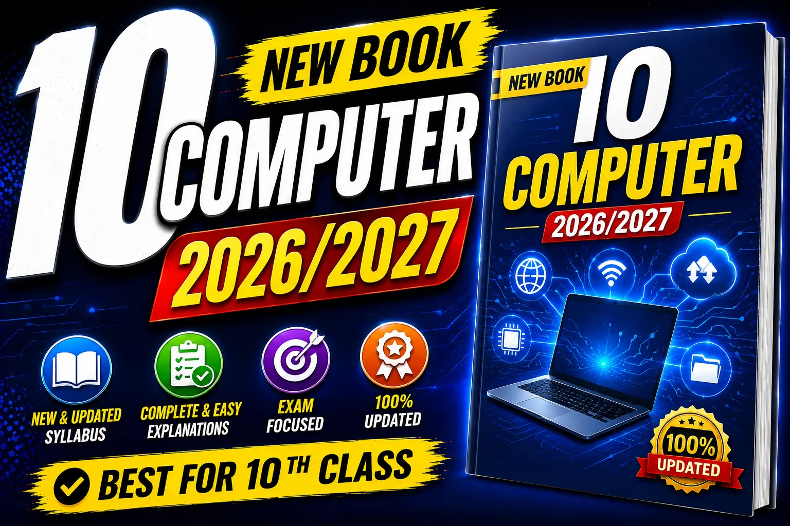
Download the latest Punjab Textbook Board Computer Science book with the updated syllabus, new chapters, and revised content.
Download Book →Explore chapter-wise notes, solved MCQs, daily tests, important questions, and exam preparation guides.
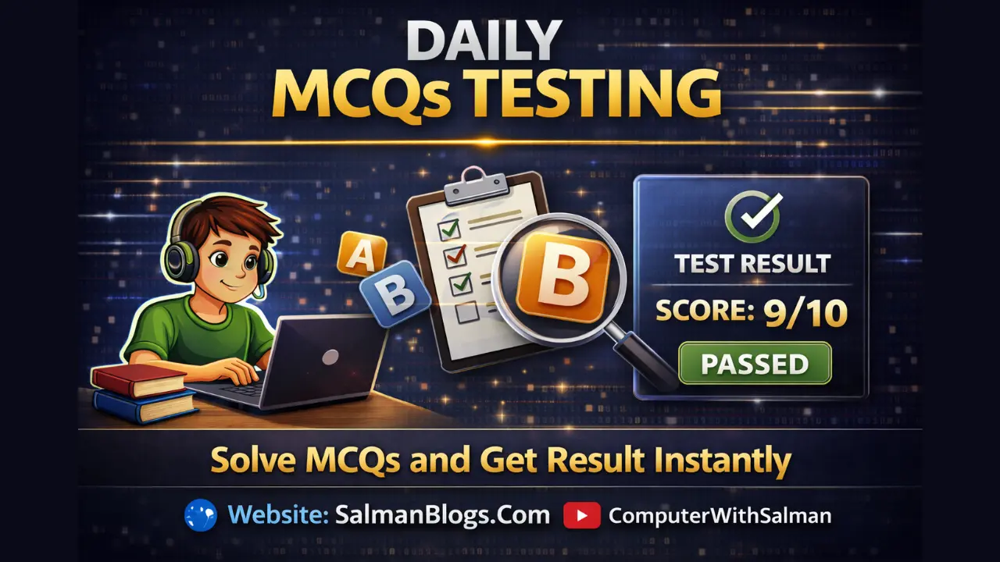
Solve Chapter 1 MCQs online and get your result instantly.
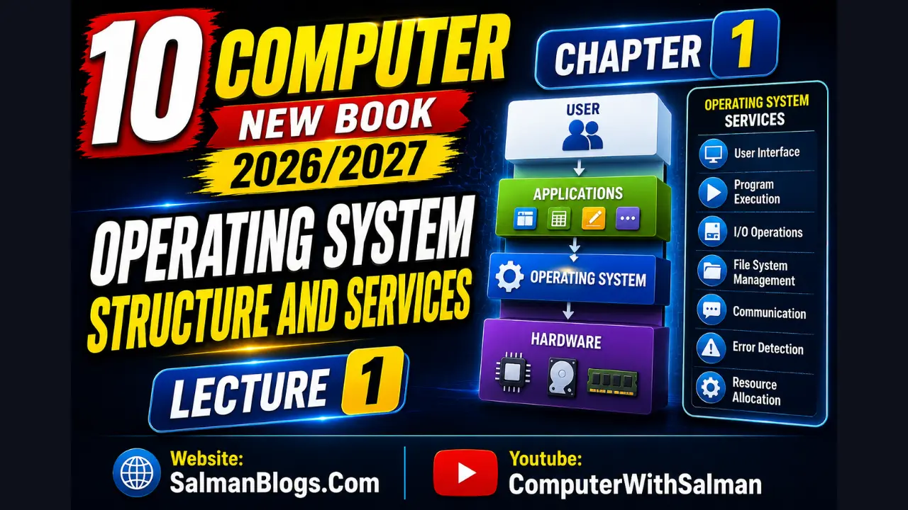
Learn the fundamentals of Operating System Structure and Services.
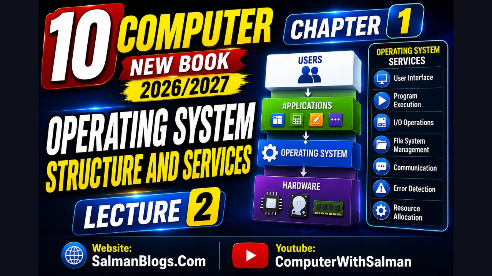
Continue learning Operating System Structure and Services in Lecture 2.
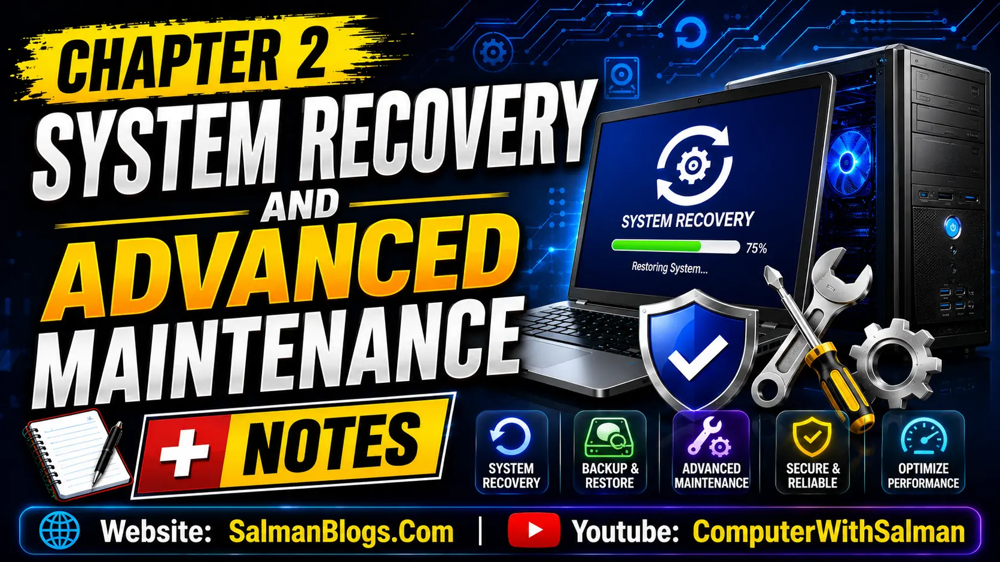
Learn all about System Recovery and Advanced Maintenance.
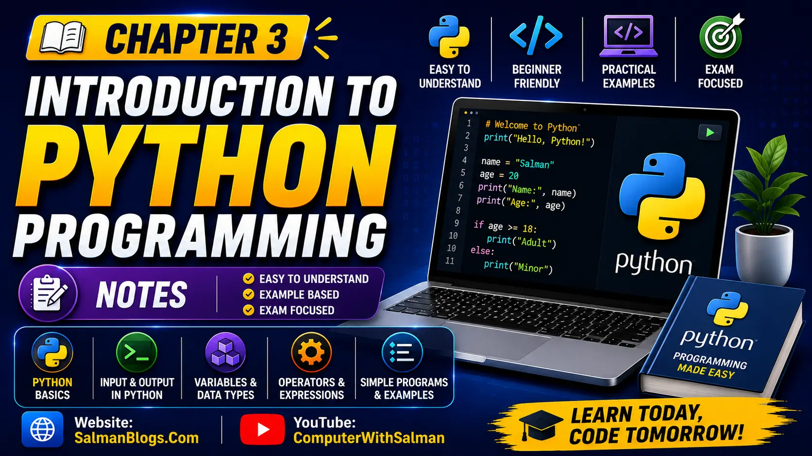
Learn Python Programming with simple explanations and examples.
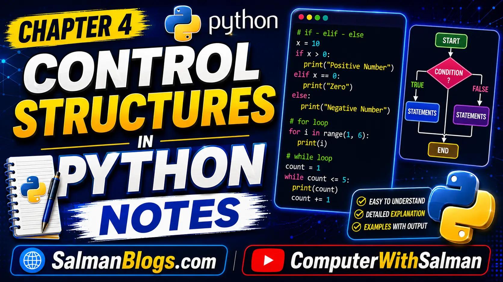
Learn about Python control structures with simple explanations and examples.
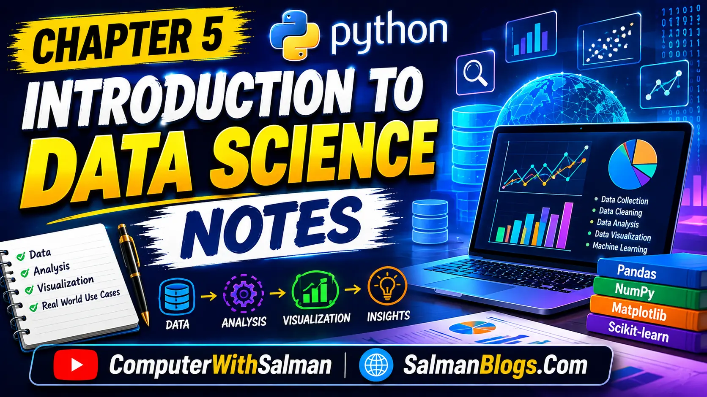
Explore Data Science and its basic concepts.
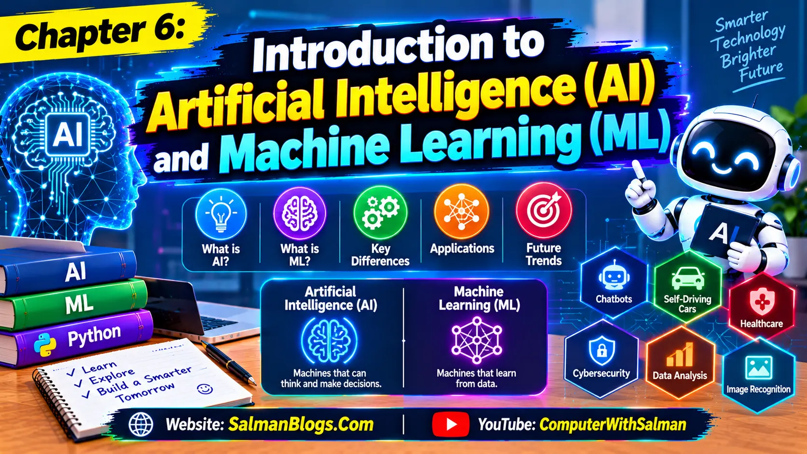
Learn about Artificial Intelligence and Machine Learning.
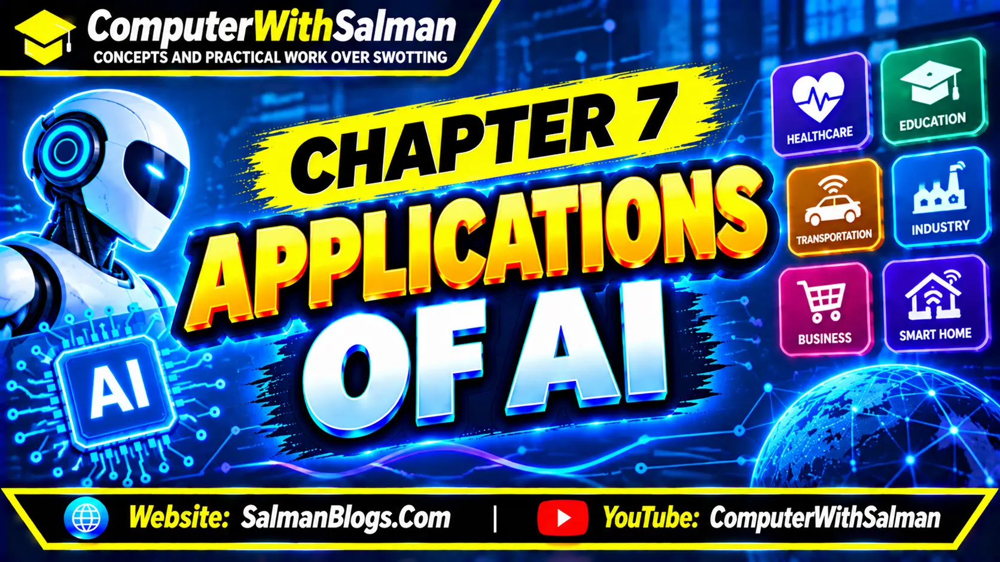
Explore different applications of Artificial Intelligence.
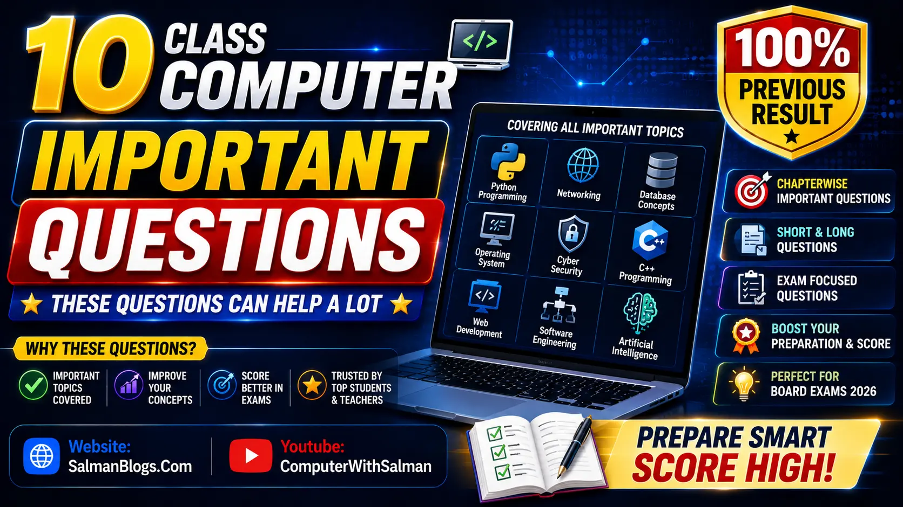
Prepare for Pakistani Boards with these important questions.